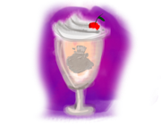
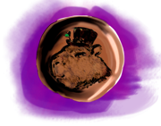
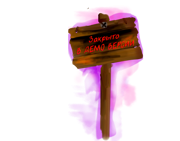
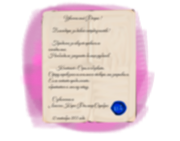
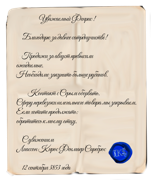
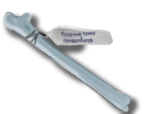
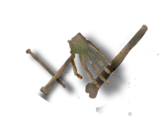

Это мой дневник, сюда попадают все мои записи
diary · упоминаний: 0
Простыми словами: Дневник. Отдельной команды получения inv_list["diary"] в коде нет. Известно только, что запись есть в списке предметов и показывается по условию проверки; пункты дневников квестов открываются отдельно командами .diary.u_part(N, 1).
Что это: Это мой дневник, сюда попадают все мои записи. И воспоминания. И квесты
При нажатии: открывает дневник
Кроме описания, предмет нигде в найденных файлах не упоминается.
Определён в script_inv_text.rpy, строка 4.
- Капибара (персонаж): Капибара: «Что это?», признаётся, что не умеет читать («Я не умею читать»), героиня извиняется; возврат на экран переходов.
diary_kap, script_4_kapibar.rpy:886 - Алекс (страж) (персонаж): Заглушка: в коде только реплика «123», затем экран переходов.
guard2_diary, script_npc_items.rpy:1047 - Ташир (Таш) (персонаж): Таш: «Я не читаю чужие вещи!». Если он знает, что «Вий» это её псевдоним (
tash.zn_vpotpam, квест viy_quest, часть 5), вспоминает это; иначе: «С каких пор ты носишь дневник?».tash_diary, script_inv.rpy:18 - Игла с ядом Малого Ужаса (предмет): Капля с иглы попадает на дневник, его край обугливается. Героиня: «Похоже, это действительно не шутки».
igla_diary, script_inv.rpy:45 - Нарси (персонаж): Нарси: «Записываешь?», шутит про весточки; если в квесте «nars_quest» дневниковая запись [0][1] равна 1, спрашивает, не принесла ли она его как что-то интересное, с выбором ответа. Ветка не дочитана.
diary_nars, script_4_tgavan_nars.rpy:483
Служебный знак белой стражи
wg_zn · упоминаний: 3
Простыми словами: Служебный знак Белой Стражи. Его выдаёт Адриан (глава Белой Стражи) в сцене, где поручает героине расследовать убийство посла Лунных Эльфов: на раскрытие около двух дней, иначе Лунные решат отомстить сами. Адриан говорит показывать знак, если кто-то усомнится, что героиня работает с ним, и предупреждает, что заберёт его, если она превысит полномочия. В коде знак даёт флаг white_guard; от него зависит, как описана встреча с эльфом у здания Саребросов (script3_tgavan_oh.rpy:708). Применение: если знака нет (или в диалоге с Адро уже выбран «adro_no» / «yes_suicide»), дверь в коридоре Саребросов «Заперто» (script_tgavan.rpy:18). Знак также выдаётся автоматически в начале режима razr (script.rpy:698) вместе с личным знаком Адриана. Что именно значит режим razr для игрока, в коде не расшифровано, это техническая ветка.
Что это: Служебный знак белой стражи.
Где получается:
- script3_tgavan_oh.rpy:520
$ inv_list["wg_zn"]._active = 1 - script3_tgavan_begin.rpy:15
$ inv_list["wg_zn"]._active = 1
Зачем нужен (где проверяется в игре):
- script_tgavan.rpy:18
if (not inv_list["wg_zn"]._active or "adro_no" in arrows_per) or "yes_suicide" in adro_dialog:
Определён в script_inv_text.rpy, строка 5.
- Адро (персонаж): Если часть 6 квеста
invest_questвыполнена: «он запомнил моё лицо». Если часть 1 не выполнена и квест активен, она показывает знак и говорит, что помогает Белой страже; Адро: «Стража сочла разумным делегировать новичка… своё слово я сдержу».adro_wg_zn, script3_tgavan_oh.rpy:1557
Небольшой черный циллиндр, он принадлежал Губерту
hat · упоминаний: 11
Простыми словами: Маленький чёрный цилиндр Губерта. Получить можно двумя способами. 1) Шляпа лежит на дороге: в сцене script_3_nazad_hat героиня выбирает «Взять» или «Оставить» (если оставить, цилиндр остаётся лежать). 2) У Губерта (говорящий «s» в этой сцене): он считает, что шляпа ему принадлежит, потому что «лежала на дороге», и не хочет расставаться с ней, но если дать ему Сливочную Капибару, он в восторге от вкуса и сам говорит «Шляпа твоя!». Куда деть: Капибаре (Мистеру Капу) цилиндр дорог, это шляпка, которую ему подарила мама. Если согласиться отдать, героиня получает +1 к моральному состоянию (sanity.moral), квест Капа выполнен, а Кап дарит ей капики (в коде kapik.count растёт на 3 и на 10 в разных местах этой сцены) (сцена hat_kap, script_4_kapibar.rpy:713). Нарси тоже может забрать цилиндр, если его квест в нужном состоянии: он берёт его как «небольшое приключение, узнай кто это был и верни», и в коде эта сцена (hat_nars, script_4_tgavan_nars.rpy:537) заканчивается экраном «Конец демоверсии. Good End». Отказать Капу можно, тогда шляпа остаётся у героини.
Что это: Небольшой черный циллиндр, он принадлежал Губерту. Интересно, и зачем он мне?
Где получается:
- script3_gubert.rpy:187
$ inv_list["hat"]._active = 1 - script3_gubert.rpy:414
$ inv_list["hat"]._active = 1
Где отдаётся или тратится:
- script_4_tgavan_nars.rpy:567
$ inv_list["hat"]._active = 0 - script_4_kapibar.rpy:766
$ inv_list["hat"]._active = 0
Зачем нужен (где проверяется в игре):
- script_npc_items.rpy:1181
if inv_list["hat"]._state== "ground":
Другие упоминания:
- script3_gubert.rpy:107
$ inv_list["hat"]._state= "ground" - script3_gubert.rpy:140
$ inv_list["hat"]._state= "ground" - script3_gubert.rpy:278
$ inv_list["hat"]._state= "ground" - script3_gubert.rpy:403
$ inv_list["hat"]._state= "" - script3_gubert.rpy:413
$ inv_list["hat"]._state= "" - script3_gubert.rpy:417
$ inv_list["hat"]._state= "ground"
Определён в script_inv_text.rpy, строка 6.
- Капибара (персонаж): Если у квеста «quest_kap» нет метки keep, героиня показывает шляпу; Капибара узнаёт цилиндр, подарок мамы, просит вернуть, платить ему нечем кроме благодарности. Выбор: «Нет...» (он расстраивается, шляпа остаётся) или «Хорошо» (
sanity.moral+1,quest_kap.done = 1, он обнимает и даёт 3 без описания kapik; шляпа из инвентаря убирается).hat_kap, script_4_kapibar.rpy:713 - Нарси (персонаж): «Кажется, я видел такой на ком-то»: он вспоминает странного маленького пушистого паренька из Айрата, шутит про «потискал»; если в «nars_quest» дневниковая запись [0][1] равна 1, есть продолжение, не разобрано.
hat_nars, script_4_tgavan_nars.rpy:537

Сливочный коктейль в стеклянном стаканчике
kap_sliv · упоминаний: 4
Простыми словами: Сливочный коктейль в стеклянном стаканчике из кафе «Кап». В кафе у Капибары можно выпить его сразу (тогда blood уменьшается на 1 один раз, флаг milk_kap) или выбрать «Взять с собой»: так предмет попадает в инвентарь (script_4_kapibar.rpy:441). Применение: 1) Губерту: если он не отдаёт шляпу, появляется вариант «А как насчёт... Сливочной Капибары?», только если коктейль есть в инвентаре (script3_gubert.rpy:162). Губерт сначала отказывается, потом пробует, в восторге и отдаёт шляпу. 2) Самому Капибаре (сцена kap_kap_sliv, script_4_kapibar.rpy:826): героиня может просто поблагодарить или предложить выпить самому; в обоих вариантах коктейль уходит из инвентаря, во втором Кап растроган («давно мне никто не предлагал что-то подобное»).
Что это: Сливочный коктейль в стеклянном стаканчике. Удивительно, что он стоит всего капик. Пахнет ваниалью и... Розовыми единорогами? И откуда я помню этот запах?
Где получается:
- script_4_kapibar.rpy:441
$ inv_list["kap_sliv"]._active = 1
Где отдаётся или тратится:
- script3_gubert.rpy:163
$ inv_list["kap_sliv"]._active = 0 - script_4_kapibar.rpy:843
$ inv_list["kap_sliv"]._active = 0
Зачем нужен (где проверяется в игре):
- script3_gubert.rpy:162
"А как насчет... Сливочной Капибары?" if inv_list["kap_sliv"]._active:
Определён в script_inv_text.rpy, строка 7.
- Капибара (персонаж): Капибара узнаёт сливочную капибару: «Отличная штука!». Выбор: «Да! Большое спасибо!» (просто благодарность, он отвечает «Всегда пожалуйста!») или «А может быть вы сами выпьете?»; остальное в ветке этой записью не разобрано.
kap_kap_sliv, script_4_kapibar.rpy:826

без описания
kapik · упоминаний: 12
Простыми словами: Капики это валюта кафе «Кап» (счётчик kapik.count, а не отдельный предмет). Зарабатываются у Капибары: 2 капика он выдаёт в начале (script4_kapibar_start_menu); +1 за работу с растениями (сцена kap_paints, мини-игра с уборкой); +1 за танец (сцена kap_dance, ритм-игра); дополнительные капики он дарит, когда героиня возвращает ему шляпу (hat_kap). Тратятся там же: ночлег за 2 капика (гамак за стойкой, открывается пункт дневника квеста «life_quest»), Сливочная Капибара за 1 капик. Если капиков не хватает, Кап предлагает выполнить поручения. Один капик забирает и Нарси (сцена kapik_nars, script_4_tgavan_nars.rpy:582): героиня может напомнить, что он не отдал капик (тогда его отношение растёт на 1), или промолчать; в обоих вариантах капик уходит.
Что это: описание в коде пустое
Где получается:
- script_4_kapibar.rpy:314
$ inv_list["kapik"].count +=2 - script_4_kapibar.rpy:553
$ inv_list["kapik"].count +=1 - script_4_kapibar.rpy:591
$ inv_list["kapik"].count +=1 - script_4_kapibar.rpy:758
$ inv_list["kapik"].count+=3 - script_4_kapibar.rpy:777
$ inv_list["kapik"].count +=10
Где отдаётся или тратится:
- script_4_tgavan_nars.rpy:632
$ inv_list["kapik"].count -=1 - script_4_tgavan_nars.rpy:640
$ inv_list["kapik"].count -=1 - script_4_kapibar.rpy:379
$ inv_list["kapik"].count -=2 - script_4_kapibar.rpy:430
$ inv_list["kapik"].count -=1
Зачем нужен (где проверяется в игре):
- script_4_kapibar.rpy:347
if inv_list["kapik"].count <2: - script_4_kapibar.rpy:388
if inv_list["kapik"].count <1:
Другие упоминания:
- script_inv_text.rpy:168
inv_list["kapik"]._text = f"Капики - {inv_list['kapik'].count}.Небольшая монетка, похоже медная. Гравировка ка
Определён в script_inv_text.rpy, строка 8.
- Капибара (персонаж): «Капик?»: героиня спрашивает, почему он продаёт за эту валюту; Капибара вспоминает детство и волшебный магазин, где всё продавалось за деньги, и что ему помогает один человек, обещавший помочь открыть такое место. Продолжение не разобрано.
kap_kapik, script_4_kapibar.rpy:864 - Нарси (персонаж): «Это не золото, не мифрил, даже не медь… это медведь? Или капибара?»; героиня на вопрос «откуда?» выбирает ответ «Из Кап и Бара»; если у «nars_kap» нет keep, есть продолжение, не разобрано.
kapik_nars, script_4_tgavan_nars.rpy:582
Амулет, который выдал Лесс
amul · упоминаний: 32
Простыми словами: Амулет (чёрный, на цепочке) — подарок Лесс. В разговоре с ней (реплики «ls») героиня слушает, что делает амулет, и в конце Лесс спрашивает «Возьмёшь эту штучку?» (script_2_less_conv_amul.rpy:198). Ответ «Возьму» кладёт амулет в инвентарь (_active = 1), «Ну его» — нет. Если взять, Лесс протягивает цепочку и спрашивает, наденет ли героиня; «Надеть сразу» включает флаг keep (амулет на шее). Позже Лесс можно попросить снять амулет (day_1_less_razg.rpy:15). Что именно амулет делает, в этой справке не разбирается: известно только, что от его состояния («black», надет или нет) зависят проверки в script.rpy:240 и Diary.rpy:445.
Что это: Амулет, который выдал Лесс. От него веет чем-то странным.
При нажатии: переход на метку amul_menu
Где получается:
- script_2_less_conv_amul.rpy:205
$ inv_list["amul"]._active = 1
Где отдаётся или тратится:
- script_2_less_conv_amul.rpy:209
$ inv_list["amul"]._active = 0 - script_inv_text.rpy:341
$ inv_list["amul"]._active = 0
Зачем нужен (где проверяется в игре):
- script.rpy:240
if inv_list["amul"].keep and inv_list["amul"].state == "black": - script.rpy:242
elif (inv_list["amul"]._active) and inv_list["amul"].state == "black": - script_4_airat.rpy:2
if (inv_list["amul"]._active) and inv_list["amul"].state == "black": - script_inv_text.rpy:264
if inv_list["amul"].state == "black": - script_inv_text.rpy:281
"Надеть" if not inv_list["amul"].keep: - script_inv_text.rpy:286
"Снять амулет" if inv_list["amul"].keep: - script_inv_text.rpy:295
"Нажать на механизм" if "toggle" in inv_list["amul"].note: - script_inv_text.rpy:300
if inv_list["amul"].state == "black": - script_inv_text.rpy:328
if inv_list["amul"].state == "black": - script_inv_text.rpy:334
"Выкинуть нафиг" if not inv_list["amul"].keep: - day_1_less_razg.rpy:15
"Ээ... А можешь снять с меня свой подарочек?" if inv_list["amul"]._keep and "no_drop" in inv_list["amul"].note - day_1_less_razg.rpy:33
if not "toggle" in inv_list["amul"].note: - и ещё 2
Другие упоминания:
- script_2_less_conv_amul.rpy:267
$ inv_list["amul"].keep = 1 - script_2_less_conv_amul.rpy:280
$ inv_list["amul"].keep = 0 - script_2_less_conv_amul.rpy:287
$ inv_list["amul"].note.append("toggle") - script_2_less_conv_amul.rpy:302
$ inv_list["amul"].note.append("toggle") - script_inv_text.rpy:175
inv_list["amul"]._text = "Амулет, который выдал Лесс. От него веет чем-то странным." - script_inv_text.rpy:185
inv_list["amul"]._text = inv_list["amul"]._text + text1 + text2 - script_inv_text.rpy:293
$ inv_list["amul"].note.append("no_drop") - script_inv_text.rpy:329
$ inv_list["amul"].state = "white" - script_inv_text.rpy:331
$ inv_list["amul"].state = "black" - script_inv_text.rpy:364
$ inv_list["amul"].keep = 1 - script_inv_text.rpy:385
$ inv_list["amul"].note.append("no_drop") - day_1_less_razg.rpy:37
$ inv_list["amul"]._keep = 0 - и ещё 3
Определён в script_inv_text.rpy, строка 9.
- Капибара (персонаж): Метка
kap_amulпо условию предмета; ветка не разобрана.kap_amul, script_inv_text.rpy:9

Странная табличка \"Закрыто в демоверсии\"
table_chaos · упоминаний: 5
Простыми словами: Деревянная табличка «Закрыто в демоверсии» из места Хаос (сцена осмотра osm_chaos_table, script3_gubert.rpy:370). Героиня читает надпись и ничего не понимает («что такое демо?»); дальше предлагается забрать табличку с собой («Можно.») или нет («Но зачем?»), от выбора зависит, попадёт ли она в инвентарь. Куда отдать: 1) Таширу (table_chaos_tash): он тоже не знает, что это значит, и обещает спросить у Урзы, если увидит его. 2) Нарси (table_chaos_nars, script_4_tgavan_nars.rpy:727): он делает вид, что надписи не видит, говорит, что собирает странные вещи и может перепродать, и забирает табличку. Если его задание в нужном состоянии (nars_quest, пункт 0 равен 1), сцена заканчивается «Конец демоверсии. Good End», иначе ставится флаг nars.helpp = 1 (что он значит для сюжета, из этой сцены не видно).
Что это: Странная табличка "Закрыто в демоверсии". Найдена около какого-то фиолетового разлома. Зачем-то я взяла ее с собой.
Где получается:
- script3_gubert.rpy:375
$ inv_list["table_chaos"]._active = 1
Где отдаётся или тратится:
- script_4_tgavan_nars.rpy:727
$ inv_list["table_chaos"]._active = 0
Зачем нужен (где проверяется в игре):
- script_newscreens.rpy:366
if not inv_list["table_chaos"]._active: - images.rpy:489
if not inv_list["table_chaos"]._active: - script3_gubert.rpy:370
if not inv_list["table_chaos"]._active:
Определён в script_inv_text.rpy, строка 10.
- Ташир (Таш) (персонаж): Таш не знает, что это за табличка; если героиня на входе в хаос (
Вход в хаос (разлом) chaos_enter), он гадает, не хочет ли Урза гостей. «Демо-демо-демо… без понятия».table_chaos_tash, script_inv.rpy:1 - Нарси (персонаж): Нарси восхищён, что ему принесли табличку («Ты гений!»), осматривает: «от неё Хаосом разит… и ещё чем-то странным»; хочется достать артефакторский набор, но лень. Продолжение не разобрано.
table_chaos_nars, script_4_tgavan_nars.rpy:674
Игла с ядом Малого Ужаса
igla · упоминаний: 6
Простыми словами: Игла с ядом Малого Ужаса. Её бросает Нарси; потом героиня находит иглу воткнутой в стол (сцена script_4_tgavan_nars_igl_inv, script_4_tgavan_nars.rpy:770) и выбирает: взять («хоть какое-то оружие») или оставить. Применение: 1) у Слизня-Губерта в разговоре появляется вариант «Воткнуть в него иглу», только если игла в инвентаре (script3_gubert.rpy:259): героиня бросается на него с иглой, он в панике убегает, игла из инвентаря пропадает. 2) Иглу можно вернуть Нарси («Вернуть»): он скучает («зачем мне выброшенные игрушки»), его отношение падает на 1, игла уходит из инвентаря и получает метку «narsi» (script_4_tgavan_nars.rpy:876); если оставить себе, он замечает, что ему любопытно, что героиня с ней сделает.
Что это: Игла с ядом Малого Ужаса. Смертельна.
Где получается:
- script_4_tgavan_nars.rpy:782
$ inv_list["igla"]._active = 1
Где отдаётся или тратится:
- script_4_tgavan_nars.rpy:876
$ inv_list["igla"]._active = 0 - script3_gubert.rpy:269
$ inv_list["igla"]._active = 0
Зачем нужен (где проверяется в игре):
- images.rpy:51
if tgavan_svet and "igl_floor" in nars_d and not inv_list["igla"]._active and not inv_list["igla"]._state == " - script3_gubert.rpy:259
"Воткнуть в него иглу" if inv_list["igla"]._active:
Другие упоминания:
- script_4_tgavan_nars.rpy:877
$ inv_list["igla"]._state = "narsi"
Определён в script_inv_text.rpy, строка 11.
- Это мой дневник, сюда попадают все мои записи (предмет): Капля с иглы попадает на дневник, его край обугливается. Героиня: «Похоже, это действительно не шутки».
igla_diary, script_inv.rpy:45 - Нарси (персонаж): ветка не разобрана: известно только условие запуска (предмет брошен на этот объект)
igla_nars, script_4_tgavan_nars.rpy:788
без описания
kremen · упоминаний: 5
Простыми словами: Кремень и кресало. Лежат на экране локации less_ter как кликабельный предмет (script_npc_items.rpy:558); осмотр запускает сцену kremen_action_osm (script_1_less_begin.rpy:553), там же его можно взять. Описание предмета в инвентаре зависит от того, как героиня его осмотрела: при высокой логике (logic_l()) она видит гравировку «РДС» и описание меняется на «Кремень и кресало, найденные в Лесу. На них есть небольшая гравировка - РДС»; если при этом факел уже есть, она замечает ту же аббревиатуру на факеле; при низкой логике это «невзрачный серый камушек», при высоком безумии (mad_l()) «прикольный камушек». Дальше проверка только одна: в конце ветки (script_3_less_end.rpy:257) при высокой логике и кремне в инвентаре героиня вспоминает гравировку «РДС» и делает вывод, что собирает «дорожный комплект»; другого применения кремня в найденных файлах нет (у факела свои сцены, см. Самый классический факел facel).
Что это: описание в коде пустое
Зачем нужен (где проверяется в игре):
- script_3_less_end.rpy:257
if logic_l() and inv_list["kremen"]._active: - script_npc_items.rpy:558
if not inv_list["kremen"]._active:
Другие упоминания:
- script_1_less_begin.rpy:564
$ inv_list["kremen"]._text = "Кремень и кресало, найденные в Лесу. На них есть небольшая гравировка - РДС." - script_1_less_begin.rpy:576
$ inv_list["kremen"]._text = "Какой-то невзрачный серый камушек?" - script_1_less_begin.rpy:579
$ inv_list["kremen"]._text = "Прикольный камушек."
Определён в script_inv_text.rpy, строка 12.
- объект
gub_osmв сцене Губерта (объект): Переход на веткуgub_osm_facel_fire.gub_osm_kremen, script3_gubert.rpy:432 - Самый классический факел (предмет): Героиня понимает, что так можно зажечь факел. Выбор: «Позже» (ничего не происходит) или «Конечно!» (предмет «факел» заменяется на горящий факел).
facel_kremen, script_inv_text.rpy:224
Небольшой жетон Церкви Ара, он из Военного Отдела, кажется, служит про
propusk · упоминаний: 5
Простыми словами: Жетон-пропуск Церкви Ара из Военного Отдела. Выдаётся в Айрате, когда героиню принимают в церковь: пропуск отдаёт Лени (личный служка Карралака; script_4_airat.rpy:988, в разговоре «Меня не пропускают») или сам Карралак (script_4_airat.rpy:1176), то есть пропуск выдаётся в одной из двух веток разговора, и просит передать «старшему» по имени Горран Ар; при этом открывается пункт 3 дневника квеста «quest_statue». Применение: у охраны у статуи кошки без пропуска не пускают («Чтобы пройти, требуется пропуск»; открывается пункт 2 дневника). Если отдать пропуск охраннику (guard1_propusk, script_5_airat.rpy:399), он забирает его, и героиня проходит (пропуск удаляется из инвентаря, ставится метка «enter», открывается пункт в квесте).
Что это: Небольшой жетон Церкви Ара, он из Военного Отдела, кажется, служит пропуском.
Где получается:
- script_4_airat.rpy:988
$ inv_list["propusk"]._active = 1 - script_4_airat.rpy:1176
$ inv_list["propusk"]._active = 1
Где отдаётся или тратится:
- script_5_airat.rpy:428
$ inv_list["propusk"]._active = 0
Зачем нужен (где проверяется в игре):
- script_5_airat.rpy:435
if not inv_list["propusk"].note:
Другие упоминания:
- script_5_airat.rpy:429
$ inv_list["propusk"].note.append("enter")
Определён в script_inv_text.rpy, строка 13.
- Алекс (страж) (персонаж): Героиня говорит, что у неё пропуск; Алекс отвечает, что она перепутала, нужен другому стражу, а тот (старший) говорит: «Я проверю».
guard2_propusk, script_5_airat.rpy:390 - Горран (старший страж) (персонаж): Героиня отдаёт пропуск; стражи шутят про возраст «старика», пославшего её; старший страж забирает пропуск и разрешает пройти: «только осторожнее».
guard1_propusk, script_5_airat.rpy:399
Личный знак Адриана, Главы Белой Стражи
adr_zn · упоминаний: 2
Простыми словами: Личный знак Адриана. Адриан отдаёт его героине, когда оставляет её в Квартале Безумцев: сказано, что с ним можно выйти из Квартала Безумцев, если понадобится, и что местные поймут, что героиня под его защитой. Знак показывают Адро: в коде есть отдельная сцена adro_adr_zn (script3_tgavan_oh.rpy:1610), где героиня демонстрирует значок. Адро холодно отвечает, что знак на него впечатления не производит (его отношение к героине падает на 1) и что без официального представительства Белой Стражи он занят. Больше проверок знака в коде нет, то есть, кроме этой сцены, его эффект в найденных файлах не виден.
Что это: Личный знак Адриана, Главы Белой Стражи. Я под его защитой.
Где получается:
- script3_tgavan_oh.rpy:431
$ inv_list["adr_zn"]._active = 1 - script3_tgavan_begin.rpy:16
$ inv_list["adr_zn"]._active = 1
Определён в script_inv_text.rpy, строка 14.
- Адро (персонаж): Героиня показывает знак Адриана; Адро не впечатлён, настроение −1, говорит, что занимается только официальными делами, а посетителям нужно записываться.
adro_adr_zn, script3_tgavan_oh.rpy:1610
Позволяет один день видеть в Темной Гавани
potion · упоминаний: 4
Простыми словами: Фиал с зельем, позволяющим один день видеть в Тёмной Гавани. Его даёт Нарси в баре («Только осторожнее! Эта штука тяжёлая как совесть дипломата»), ставит бутылочку справа от героини, и она становится кликабельным предметом (script_4_tgavan_nars.rpy:326). Выпить фиал можно в сцене script_4_tgavan_potion (script_4_tgavan_nars.rpy:898): эффект сильный (белая вспышка, «слишком светло»), Адриан говорит, что так всегда в первый раз и что зелье надо пить каждый день; потом зрение проясняется и включается флаг tgavan_svet, от которого зависит, видно ли город и часть объектов (images.rpy). Как зелье попадает в инвентарь без отдельной команды, из кода не ясно: в коде меняется только состояние state («bar» на столе, потом 0), а не _active.
Что это: Позволяет один день видеть в Темной Гавани. Весьма увесистая штука.
Зачем нужен (где проверяется в игре):
- images.rpy:31
if inv_list["potion"].state == "bar":
Другие упоминания:
- script_4_tgavan_nars.rpy:326
$ inv_list["potion"].state = "bar" - script_4_tgavan_nars.rpy:904
$ inv_list["potion"].state = 0 - script_4_tgavan_nars.rpy:950
$ inv_list["potion"].state = 0
Определён в script_inv_text.rpy, строка 15.
Посох с черепом
bonny · упоминаний: 2
Простыми словами: Бонни — говорящий посох с черепом. Он лежит на локации как кликабельный предмет (script_npc_items.rpy:224; пока не начат квест «bonny_quest», героиня «физически не может» его взять — она промахивается, day_1_bonny_razg.rpy:104). Когда квест позволяет, героиня берёт посох, Бонни говорит «Хей-оп!» и сжимается, чтобы помещаться в сумку, хотя череп всё ещё великоват; при этом в инвентаре включается _active = 1 (day_1_bonny_razg.rpy:131) и закрывается пункт дневника квеста. Применение отдельно не разбиралось: известно только, что при bonny._active объект на локации больше не показывается.
Что это: Посох с черепом. Оно кусается и ругается. Сомнительное приобретение.
Где получается:
- day_1_bonny_razg.rpy:131
$ inv_list["bonny"]._active = 1
Зачем нужен (где проверяется в игре):
- script_npc_items.rpy:224
if not inv_list["bonny"]._active and not razg == "bonny":
Определён в script_inv_text.rpy, строка 16.
b_head(объект): ветка не разобрана: известно только условие (предмет брошен на этот объект)bonny_b_head, script_npc_items.rpy:1844bonny_x(объект): ветка не разобрана: известно только условие (предмет брошен на этот объект)bonny_bonny_x, script_npc_items.rpy:1877- Косточка с биркой - Она мне точно понадобится (предмет): ветка не разобрана: известно только условие (предмет брошен на этот объект)
bonny_bones_strange, script_npc_items.rpy:1909
Обычные золотые монеты, ничего особенного
money · упоминаний: 1
Простыми словами: Деньги (золотые). Счётчик увеличивается в сцене с Дэвой в Айрате: героиня соглашается помочь («Да, я помогу. Всё равно я собиралась осмотреться»), и она отдаёт пять золотых (count += 5, script_4_airat.rpy:437). Других начислений и трат в проверенных файлах не найдено; картинки у предмета нет.
Что это: Обычные золотые монеты, ничего особенного. Если не считать того, что они немного светятся.
Где получается:
- script_4_airat.rpy:437
$ inv_list["money"].count += 5
Картинки предмета в папке проекта нет.
Определён в script_inv_text.rpy, строка 17.
- Капибара (персонаж): Героиня вводит сумму (
renpy.input). Не число: «Что я только что ему предложила?» и ввод заново. 0: «Я передумала», возврат в меню. Если больше, чем есть денег (money): отдельная реплика, остальное не разобрано.kap_money, script_4_kapibar.rpy:459

Разные бумаги, найденные в кабинете Лиассона (Нажмите на икноку, чтоб
papers · упоминаний: 1
Простыми словами: Бумаги из кабинета Сареброса (sar_cab_paper, script_4_tgavan_adro.rpy:98). Героиня осматривает стол, заваленный счетами и перепиской, и понимает, что это контрабанда; среди счетов находит списки имён, даты, суммы и пометки об исполнении. Имя Нарси встречается чаще всех: он был «решателем проблем» семьи. Бумаги ведут к двум отдельным записям: Зазказ на Убийство kill (заказные убийства) и Бумага о прекращении работы с контрабандой lias_closed (поздние черновики Лиассона). Предмет добавляется в инвентарь (_active = 1) сразу при осмотре.
Что это: Разные бумаги, найденные в кабинете Лиассона (Нажмите на икноку, чтобы просмотреть)
При нажатии: переход на метку papers_label
Где получается:
- script_4_tgavan_adro.rpy:104
$ inv_list["papers"]._active = 1
Определён в script_inv_text.rpy, строка 18.

Бумага о прекращении работы с контрабандой
lias_closed · упоминаний: 1
Простыми словами: Закрытые, более поздние черновики Лиассона из тех же бумаг (script_4_tgavan_adro.rpy:112). Чем свежее даты, тем меньше в них крови: интересы смещаются к легальной торговле. При высокой логике (logic_l()) героиня делает вывод, что Лиассон пошёл на безумный риск, пытаясь легализовать доходы, не обрушив империю рода. Адриан-ворчун в мыслях замечает, что ледяной посол «отрастил совесть». После картинки выставляется метка paper_osm в диалогах Адро.
Что это: Бумага о прекращении работы с контрабандой. Похоже, он решил оборвать старые связи.
Группа: papers
Другие упоминания:
- script_4_tgavan_adro.rpy:117
$ inv_list["lias_closed"]._acive_vrem = 1
Определён в script_inv_text.rpy, строка 19.
Зазказ на Убийство
kill · упоминаний: 1
Простыми словами: Списки заказов на убийства из бумаг Сареброса. Показываются картинкой при осмотре стола в кабинете (script_4_tgavan_adro.rpy:104). Героиня видит, что Лиассон заказывал убийство собственного брата, а напротив плана Адро стоит лаконичная пометка «Неудачно». Запись открывается временно (_acive_vrem = 1, поле с опечаткой в коде), отдельной проверки в инвентаре найдено не было.
Что это: Зазказ на Убийство. Найден в кабинете Лиассона.
Группа: papers
Другие упоминания:
- script_4_tgavan_adro.rpy:105
$ inv_list["kill"]._acive_vrem = 1
Определён в script_inv_text.rpy, строка 20.
- Адро (персонаж): В первый раз (флаг Зазказ на Убийство kill в
adro_d) героиня показывает план убийства; он ностальгически улыбается («Лиассон всё-таки решился обратиться к профессионалу… к самому Нарси»). Остальное не разобрано.adro_kill, script3_tgavan_oh.rpy:1627
Самый классический факел
facel · упоминаний: 4
Простыми словами: Факел, найденный в лесу. Героиня осматривает его в конце лесной ветки и решает оставить себе: «мне эта штучка сейчас явно нужнее, чем местным призракам» (keep_facel, script_3_less_end.rpy:272, _active = 1). Применение: на объекте с кремнём (script_1_less_begin.rpy:565) проверяется, есть ли факел. Сам факел без огня света не даёт; горящий вариант это отдельная запись Горящий факел! Любовь всех пироманов facel_fire.
Что это: Самый классический факел. Дегтярный! Лежал тут, хрен знает сколько. Простенько, но качественно. Гравировка РДС
Где получается:
- script_3_less_end.rpy:282
$ inv_list["facel"]._active = 1
Где отдаётся или тратится:
- script_inv_text.rpy:246
$ inv_list["facel"]._active = 0
Зачем нужен (где проверяется в игре):
- script_npc_items.rpy:279
if not inv_list["facel"]._active: - script_1_less_begin.rpy:565
if inv_list["facel"]._active:
Определён в script_inv_text.rpy, строка 21.
- без описания (предмет): Героиня понимает, что так можно зажечь факел. Выбор: «Позже» (ничего не происходит) или «Конечно!» (предмет «факел» заменяется на горящий факел).
facel_kremen, script_inv_text.rpy:224
Небольшая белая тряпочка, довольно таки чистая
cloath · упоминаний: 10
Простыми словами: Тряпка, найденная в лесу. Героиня подбирает её в конце лесной ветки (keep_cloath, script_3_less_end.rpy:309) с шуткой про «уборку в лесу», _active = 1. Применение: на локации есть сломанная ветка, из которой идёт кровь (объект «cloath_v»); если принести тряпку и выбрать «Перевязать» (cloath_cloath_v, script_npc_items.rpy:1800), тряпка пропадает из инвентаря, ставится метка «bint», настроение Лесс +2, а ветка перевязана («ей явно лучше»). Если выбрать «Нахрен надо», тряпка остаётся у героини.
Что это: Небольшая белая тряпочка, довольно таки чистая. Но... Зачем?
Где получается:
- script_3_less_end.rpy:318
$ inv_list["cloath"]._active = 1
Где отдаётся или тратится:
- script_npc_items.rpy:1819
$ inv_list["cloath"]._active = 0
Зачем нужен (где проверяется в игре):
- script_npc_items.rpy:353
if "bint" in inv_list["cloath"].note: - script_npc_items.rpy:365
if "bint" in inv_list["cloath"].note: - script_npc_items.rpy:373
if not inv_list["cloath"]._active: - script_npc_items.rpy:380
if not inv_list["cloath"]._active: - script_npc_items.rpy:394
if not inv_list["cloath"]._active and not "bint" in inv_list["cloath"].note: - script_npc_items.rpy:406
if "bint" in inv_list["cloath"].note: - script_npc_items.rpy:408
elif not inv_list["cloath"]._active:
Другие упоминания:
- script_npc_items.rpy:1820
$ inv_list["cloath"].note.append("bint")
Определён в script_inv_text.rpy, строка 22.
- дерево, к которому героиня прислоняет ткань (объект
cloath_v) (объект): Героиня сомневается, зачем перевязывать дерево, но «это возможно». Выбор: «Перевязать» (ткань убирается из активных предметов, в заметки предмета записывается «bint», настроение Лесса +2) или «Нахрен надо» (ткань остаётся у неё).cloath_cloath_v, script_npc_items.rpy:1808
Горящий факел! Любовь всех пироманов
facel_fire · упоминаний: 6
Простыми словами: Горящий факел. Пока он горит, на дороге в Тёмную Гавань есть свет: без него героиня не проходит дальше («А вперёд без света не пройти», script3_tgavan_road.rpy:76), а с ним доступны экраны локации (images.rpy:441, 728). При входе в Гавань факел гаснет: «Чёрт! Факел потух! Ненадолго же его хватило... Надеюсь, я запомнила дорогу» (script3_tgavan_begin.rpy:2). Как факел зажигается, прямой командой _active = 1 не находится: в сцене с кремнём (gub_osm_facel_fire, script3_gubert.rpy:435) попытка поджечь не удаётся.
Что это: Горящий факел! Любовь всех пироманов.
Где получается:
- script_inv_text.rpy:247
$ inv_list["facel_fire"]._active = 1
Где отдаётся или тратится:
- script3_tgavan_begin.rpy:3
$ inv_list["facel_fire"]._active = 0
Зачем нужен (где проверяется в игре):
- script3_tgavan_begin.rpy:2
if inv_list["facel_fire"]._active: - images.rpy:441
if tgavan_svet or inv_list["facel_fire"]._active: - images.rpy:728
if not tgavan_svet and not inv_list["facel_fire"]._active: - script3_tgavan_road.rpy:76
if not inv_list["facel_fire"]._active:
Определён в script_inv_text.rpy, строка 23.
- объект
gub_osmв сцене Губерта (объект): Героиня пытается поджечь объект: «Пшшш…», настроение Лесса −2, «Эта штука не горит, совсем».gub_osm_facel_fire, script3_gubert.rpy:435
Похоже, отношения отца и сына были мягко скажем не очень
father_letter · упоминаний: 3
Простыми словами: Письмо отца. Героиня находит его в кабинете Сареброса (sar_cab_kamletter, script_4_tgavan_adro.rpy:121): пачку писем, перевязанных лентой, где слова полны безумной искренней влюблённости, а рядом лежат холодные официальные ответы. Письмо открывается на экране «letter» и временно становится доступным (_vrem_active = 1), навсегда в инвентарь командой _active оно не добавляется. Что письмо значит для сюжета дальше, здесь не разбирается: известно только условие показа.
Что это: Похоже, отношения отца и сына были мягко скажем не очень. Это больше похоже на угрозы.
Группа: papers_screen
Другие упоминания:
- script_4_tgavan_adro.rpy:131
$ inv_list["father_letter"]._vrem_active = 1 - script_4_tgavan_adro.rpy:132
$ renpy.show_screen("letter", down = "letter_down", text_now =inv_list["father_letter"]._text_screen, scroll = - script_inv_text.rpy:72
inv_list["father_letter"]._text = "Похоже, отношения отца и сына были мягко скажем не очень. Это больше похоже
Определён в script_inv_text.rpy, строка 24.

Косточка с биркой - Она мне точно понадобится
bones_strange · упоминаний: 4
Простыми словами: Странные кости. Лежат на локации как кликабельный предмет (script_npc_items.rpy:1462, 1517): пока они не в инвентаре, их можно осмотреть, при наведении выводятся фразы героини. Как они попадают в инвентарь командой _active = 1, не найдено: известно только условие проверки «пока не взяты».
Что это: Косточка с биркой - Она мне точно понадобится. Кто бы это здесь не оставил, у него было своеобразное чувство юмора.
Зачем нужен (где проверяется в игре):
- script_npc_items.rpy:1462
if not inv_list["bones_strange"]._active: - script_npc_items.rpy:1517
if not inv_list["bones_strange"]._active:
Другие упоминания:
- script_npc_items.rpy:1479
hovered get_hovered("bone_strange", look = (SetVariable("bone_phrases", ["Странная кость.","На ней бирочка - \ - script_npc_items.rpy:1528
hovered get_hovered("bone_strange", look = (SetVariable("bone_phrases", ["Странная кость.","На ней бирочка - \
Определён в script_inv_text.rpy, строка 25.
- Посох с черепом (предмет): Героиня показывает «штучку из твоих костей»; Бонни долго разглядывает, потом говорит «Ну, это кость», а на вопрос героини ссылается на отсутствие магического анализа и «не знаю» и прячется (ничего не раскрывает).
bonny_bones_strange, script_npc_items.rpy:1909
Контракт черной печати (Нажмите, чтобы посмотреть)
black_seal · упоминаний: 2
Простыми словами: Контракт Чёрной Печати. Это запись памяти (memoris_notes), а не предмет с командой inv_list (Diary_def.rpy:234, Diary_text.rpy:205-251). Текст: контракт используется повсеместно; героиня сначала пишет, что подписала его, а потом, что ничего не подписывала. Пункт 4 открывается после пункта 3 при условии, что запись удержана (_keep).
Что это: Контракт черной печати (Нажмите, чтобы посмотреть)
При нажатии: переход на метку black_seal_label (такой метки в найденных файлах нет, предмет ничего не запустит)
Группа: papers_screen
Другие упоминания:
- script_newscreens.rpy:532
use letter(down = "black_seal_big", text_now = inv_list["black_seal"]._text_screen, scroll = 0,dismiss = 0) - script3_tgavan_oh.rpy:1081
show screen letter(down = "black_seal_big", text_now = inv_list["black_seal"]._text_screen, scroll = 0, xpos_n
Определён в script_inv_text.rpy, строка 26.
Милая игральная карта
tash_card · упоминаний: 3
Простыми словами: Карточка Таша. Героиня получает её в сцене у Таша: переворачивает её из стороны в сторону, но на ней ничего нет, и карточка попадает в инвентарь (script3_nazad.rpy:1790). Позже карточку можно вернуть Ташу («Отдать»: «Знаешь, она твоя»), и тогда она пропадает из инвентаря (script3_nazad.rpy:1888); при высокой логике героиня замечает, что карточка её «слегка напрягает». Картинки у предмета нет.
Что это: Милая игральная карта. По крайней он с ними как-то играл, но значений на ней нет.
При нажатии: переход на метку tash_card_osm (такой метки в найденных файлах нет, предмет ничего не запустит)
Где получается:
- script3_nazad.rpy:1790
$ inv_list["tash_card"]._active = 1
Где отдаётся или тратится:
- script3_nazad.rpy:1888
$ inv_list["tash_card"]._active = 0
Зачем нужен (где проверяется в игре):
- script_npc_items.rpy:142
if not inv_list["tash_card"]._active:
Картинки предмета в папке проекта нет.
Определён в script_inv_text.rpy, строка 27.
- Ташир (Таш) (персонаж): Ветка
tash_tash_card; описание предмета в инвентаре.tash_tash_card, script3_nazad.rpy:1838

Старый суповой набор
bonny_1 · упоминаний: 2
Простыми словами: Косточки (запись bonny_1). Лежат на локации как перетаскиваемый объект (script_npc_items.rpy:79, пока значение предмета равно 0). В сцене bonny_1_tash_menu Таш просит их у героини; если она соглашается («Окей, забирай, мне-то они зачем?»), он забирает все косточки, его настроение растёт на 1 и значение предмета становится None (script3_nazad.rpy:1928). Где именно косточки впервые попадают к героине, в проверенных строках не найдено: известно только условие проверки.
Что это: Старый суповой набор.
При нажатии: переход на метку tash_card_osm (такой метки в найденных файлах нет, предмет ничего не запустит)
Зачем нужен (где проверяется в игре):
- script_npc_items.rpy:79
if inv_list["bonny_1"]._active == 0:
Другие упоминания:
- script3_nazad.rpy:1928
$ inv_list["bonny_1"]._active = None
Определён в script_inv_text.rpy, строка 28.
- Ташир (Таш) (персонаж): Ветка
bonny_1_tash(с менюbonny_1_tash_menu), описана в строке объекта bonny_1.bonny_1_tash, script3_nazad.rpy:1907
Чашка горячего чая
tea · упоминаний: 8
Простыми словами: Чай. Его заваривает охранник g1 в Айрате («в походах чай прекрасно заваривается», script_5_airat.rpy:812; _active = 1). В сцене tea (script_5_airat.rpy:826) героиня может выпить его («Сладкий, мягкий, освежающий вкус»): тогда чай переходит в пустую кружку Пустая кружка cap. Если отказаться, чай остаётся.
Что это: Чашка горячего чая.
При нажатии: переход на метку tea
Где получается:
- script_5_airat.rpy:241
$ inv_list["tea"]._active = 1 - script_5_airat.rpy:820
$ inv_list["tea"]._active = 1 - script_5_airat.rpy:850
$ inv_list["tea"]._active = 1
Где отдаётся или тратится:
- script_5_airat.rpy:837
$ inv_list["tea"]._active = 0
Зачем нужен (где проверяется в игре):
- script_npc_items.rpy:1018
if inv_list["tea"]._active or inv_list["cap"]._active: - script_npc_items.rpy:1024
if inv_list["tea"]._active or inv_list["cap"]._active: - script_npc_items.rpy:1035
if inv_list["tea"]._active or inv_list["cap"]._active: - script_5_airat.rpy:240
if not inv_list["tea"]._active or inv_list["cap"]._active:
Определён в script_inv_text.rpy, строка 29.
Пустая кружка
cap · упоминаний: 6
Простыми словами: Пустая кружка после выпитого чая. Появляется, когда героиня выпивает чай (script_5_airat.rpy:838), и заменяет Чашка горячего чая tea в инвентаре. Действие cap_cap_ch (script_5_airat.rpy:848) возвращает всё как было: чай снова активен, кружка нет. Других проверок кружки, кроме парной с чаем (script_npc_items.rpy:1018), не найдено.
Что это: Пустая кружка.
При нажатии: переход на метку cap (такой метки в найденных файлах нет, предмет ничего не запустит)
Где получается:
- script_5_airat.rpy:838
$ inv_list["cap"]._active = 1
Где отдаётся или тратится:
- script_5_airat.rpy:851
$ inv_list["cap"]._active = 0
Зачем нужен (где проверяется в игре):
- script_npc_items.rpy:1018
if inv_list["tea"]._active or inv_list["cap"]._active: - script_npc_items.rpy:1024
if inv_list["tea"]._active or inv_list["cap"]._active: - script_npc_items.rpy:1035
if inv_list["tea"]._active or inv_list["cap"]._active: - script_5_airat.rpy:240
if not inv_list["tea"]._active or inv_list["cap"]._active:
Определён в script_inv_text.rpy, строка 30.
- чайник (объект
cap_ch) (объект): Героиня набирает ещё кружечку чая: предмет «чай» становится активным, кружка (cap) перестаёт быть активной; страж говорит «Приятного!».cap_cap_ch, script_5_airat.rpy:847